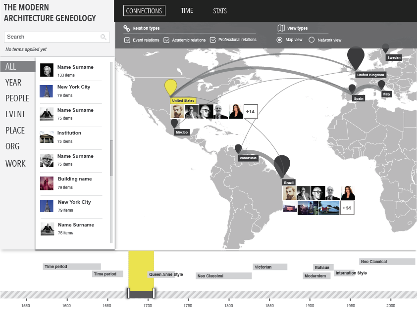
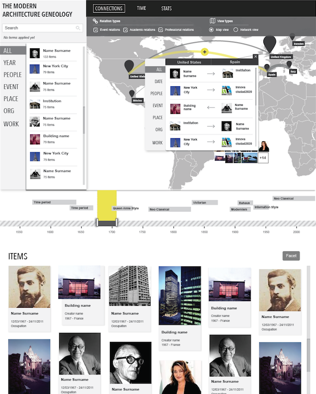
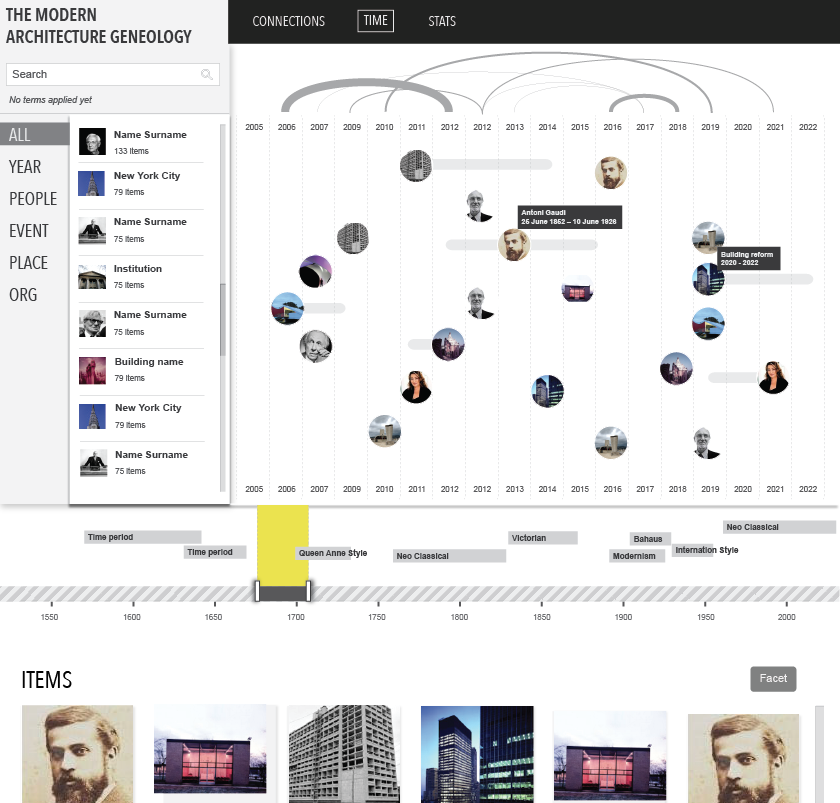
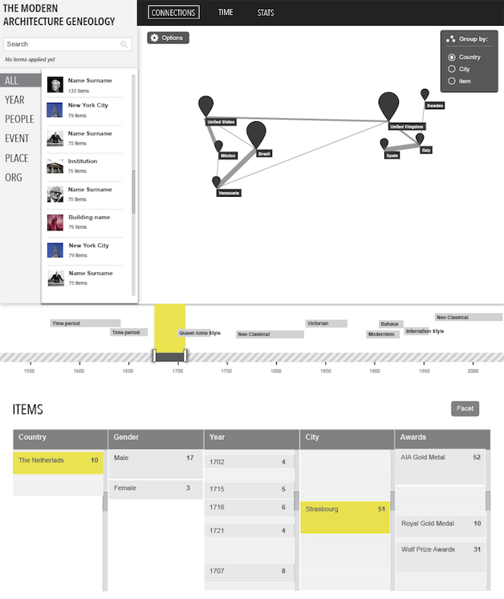

- Xavi Gimenez
- Blog
The MODERN Architecture Genealogy Project
Information architecture definition, functional design and wireframing for The MODERN Architecture Genealogy Project, which maps the currents of inspiration that run through the history of architecture. By diagramming networks of collaborations, movements, world expos and exhibitions in architecture, this project offers a new perspective into the development of contemporary architectural practice.



